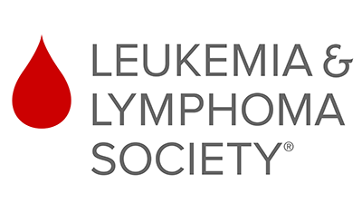
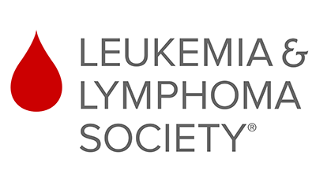

Leukemia & Lymphoma 3 Day Festival
Date: September 7th-9th
Location: Golden Gate Park, San Francisco
Sponsored By: Leukemia & Lymphoma Society

Date: September 7th-9th
Location: Golden Gate Park, San Francisco
Sponsored By: Leukemia & Lymphoma Society
The Leukemia & Lymphoma Society (LLS) is a non-profit organization dedicated to funding research for blood cancers like leukemia, lymphoma, Hodgkin's disease, and myeloma. Founded in 1949 and headquartered in Rye Brook, New York, LLS has been at the forefront of the fight against blood cancers for over seven decades.
LLS invests heavily in research to discover new treatments and cures for blood cancers. They fund both basic and clinical research, as well as innovative therapies and approaches.
LLS provides a range of support services to patients and their families, including financial assistance, educational programs, and support groups. They strive to improve the quality of life for those affected by blood cancers.
LLS advocates for policies and funding that support blood cancer research and ensure access to affordable, high-quality care for patients. They work to raise awareness about the impact of blood cancers and the importance of research funding.
LLS offers educational resources for patients, caregivers, healthcare professionals, and the general public. They aim to empower individuals with knowledge about blood cancers and available treatment options.
LLS has played a significant role in advancing the understanding and treatment of blood cancers, contributing to numerous breakthroughs in research and improving outcomes for patients. Through fundraising events like Light The Night walks and Team In Training, as well as partnerships with corporations, foundations, and individuals, LLS continues to make a meaningful difference in the lives of those affected by blood cancers.